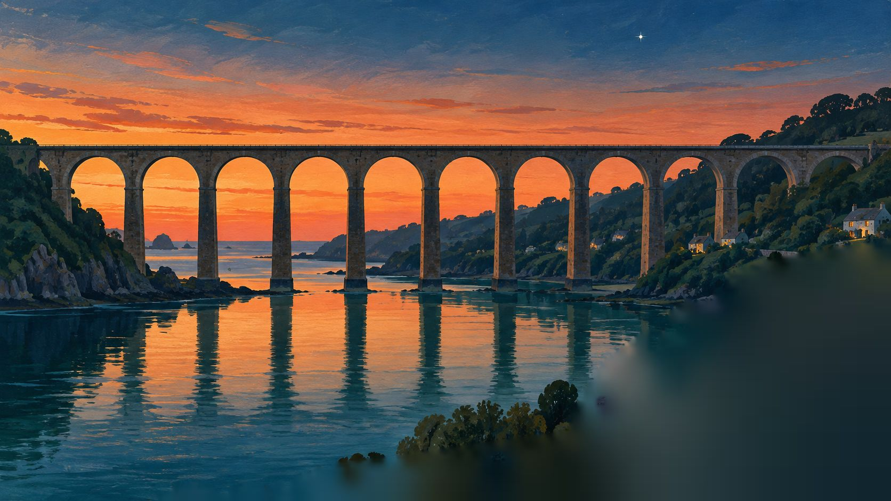
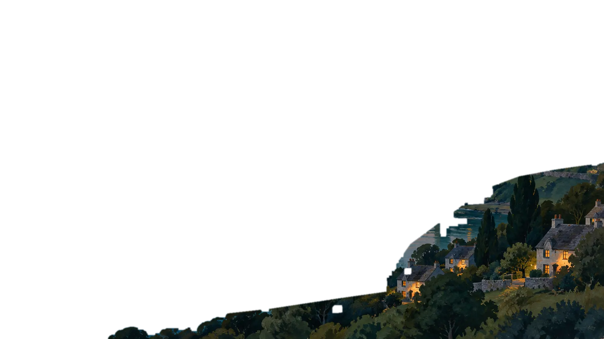

01Bilbao-Abandodep. 19:40
leaving on theLast light
Nine arches over the estuary. The driver eases to thirty here so the dining car can see it.
The doors close at 19:38 and the city slides off backwards: shipyards, cranes, a last tram. Twenty minutes later the line steps out over the water and the whole train leans toward the windows.
- Journey
- 13h 30
- Carriages
- 9
- Berths
- 64
- Dining car
- 1